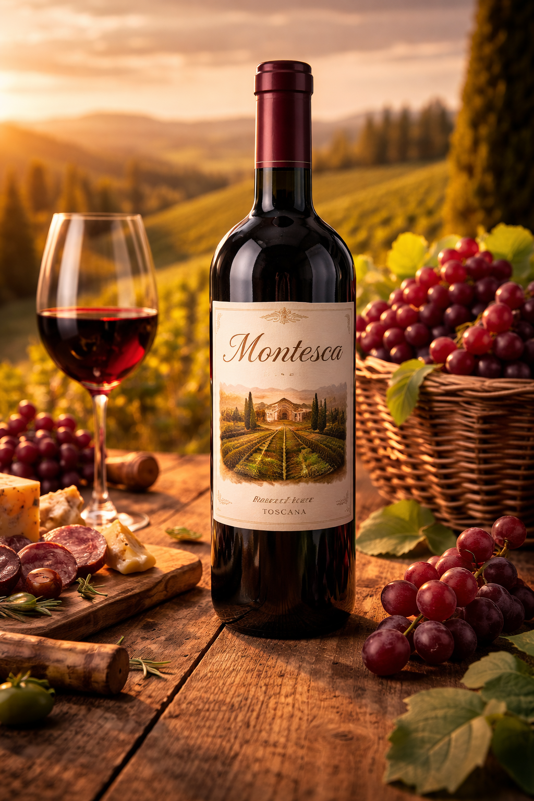

Nossos vinhos
|
 |
Montesca Toscana RiservaO Montesca Toscana Riserva é um refinado vinho tinto inspirado nas tradicionais vinícolas da Toscana, elaborado a partir de uvas cuidadosamente selecionadas. Possui coloração rubi intensa e aromas marcantes de frutas vermelhas maduras, com delicadas notas de ervas mediterrâneas e um leve toque de carvalho proveniente de seu envelhecimento. Em boca é encorpado e harmonioso, com taninos suaves e final elegante, ideal para acompanhar tábuas de frios, carnes assadas e massas com molhos ricos. |

|
Cascata d’Oro Vino RossoO Cascata d’Oro Vino Rosso é um sofisticado vinho tinto inspirado nas tradicionais vinícolas italianas, elaborado a partir de uvas selecionadas cultivadas em encostas ensolaradas. Apresenta uma coloração rubi profunda e aromas envolventes de frutas vermelhas maduras, com delicadas notas de especiarias e leve toque amadeirado. Em boca é equilibrado e elegante, com taninos macios e final agradável, ideal para acompanhar carnes grelhadas, massas artesanais e queijos maturados. |

|
Bella Vita Chianti Classico RiservaO Bella Vita Chianti Classico Riserva é um elegante vinho tinto italiano da região da Toscana, elaborado principalmente com uvas Sangiovese selecionadas. Apresenta coloração rubi intensa e aromas de frutas vermelhas maduras, com sutis notas de especiarias e carvalho provenientes de seu período de envelhecimento. Em boca é equilibrado, com taninos macios e final persistente, sendo uma excelente escolha para acompanhar carnes vermelhas, massas com molhos encorpados e queijos curados |